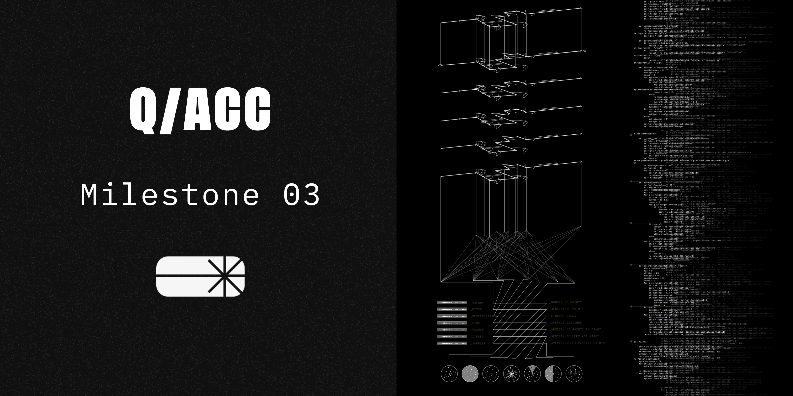
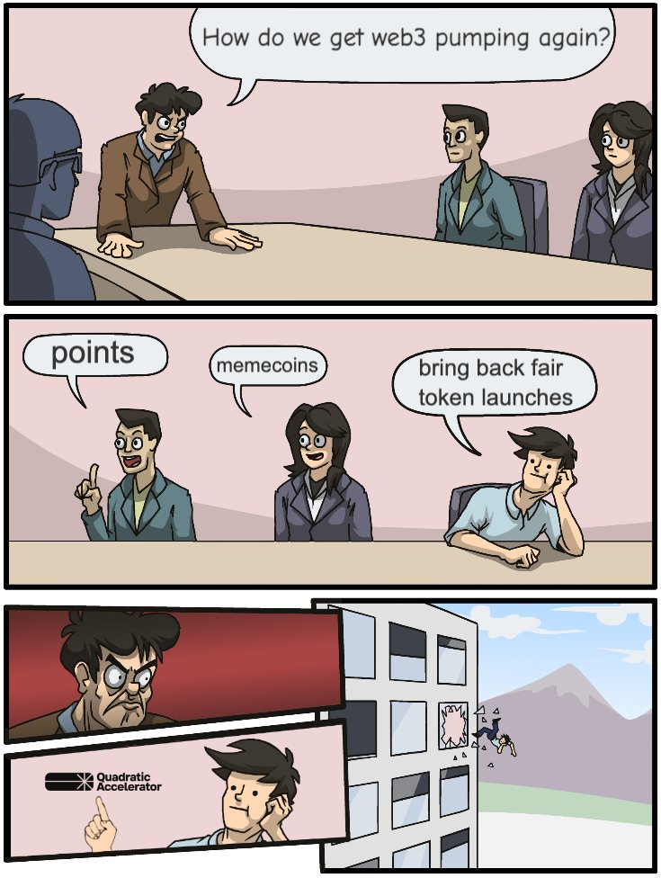

Q/ACC: MS3
Originally published at https://paragraph.com/@qacc/q-acc-ms3

At q/acc, we believe that innovation never sleeps, so neither do we. Two months have flown by since our last builder update, and we have amazing updates to share. Whether you’ve been with us from the start or are just discovering q/acc, this update brings you up to speed on how we’re transforming token ecosystems and empowering projects to create dynamic, sustainable economies. Catch the details below, and if you’re new, start with our video explainer to dive into the vision that drives us forward.

Prod Deployment of q/acc Protocol on zkEVM
We’re excited to announce that the q/acc protocol is now fully deployed and operational on Polygon zkEVM, marking a major milestone for our team. This deployment brings our complete suite of bonding curves and quadratic funding (QF) infrastructure live, creating an on-chain foundation for dynamic, scalable token economies. With this infrastructure in place, projects can now leverage automated, sustainable funding mechanisms directly on zkEVM, furthering our mission to reshape the future of decentralized funding. In collaboration, Giveth has also launched its stack on zkEVM, setting the stage for deeper ecosystem interoperability and expanding the reach and resilience of QF-driven initiatives across Polygon’s ecosystem.
Zero Knowledge Identity Verification (zkID) is Live
We’re thrilled to introduce zkID, our zero-knowledge identity verification system, which is now live in partnership with Privado. This breakthrough lets us ensure compliance and prevent civil attacks by excluding sanctioned entities without accessing or storing users’ personal documents. It’s a decisive step toward privacy-preserving verification and sets the stage for a new trend in decentralized identity.
https://x.com/theqacc/status/1849491274845520041
Privado has captured the uniqueness of q/acc’s implementation in a comprehensive paper, highlighting how zkID aligns with our commitment to secure, decentralized funding. You can explore their insights here:
https://www.privado.id/blog/get-ready-for-q-acc-decentralized-funding
Recently, we hosted a space to discuss the article and the future of zero-knowledge identity. Tune in to catch the conversation here: Twitter Space Replay.
Ready to get started with zkID? Follow this tutorial to secure your credential and become eligible to mint project tokens in the upcoming QAC Round: zkID Credential Guide.
Bonding Curves Launched: Eight Teams Go Live
We’re excited to announce that all eight teams have successfully launched their Augmented Bonding Curves, marking the official rollout of their token economies on Polygon zkEVM. This achievement brings each project’s economy to life, utilizing our cutting-edge bonding curve infrastructure to enable dynamic, adaptive token ecosystems.
As these bonding curves gain traction, they’re expected to make a significant impact on zkEVM’s Total Value Locked (TVL), boosting liquidity and creating more resilient financial mechanisms. Stay tuned for updates as we track how these pioneering projects shape the zkEVM landscape. Read this to learn more about the teams:
https://mirror.xyz/qacc.eth/41R7D74TZpQ9HfrUevlHts2XFhoipeY_kuTOhKPUb34
New Partners and Advisors: Strengthening the q/acc Ecosystem
At q/acc, our mission is to accelerate token economies through scalable, repeatable crypto primitives—a core strength of our founding team. But empowering projects to achieve escape velocity requires more than robust tech alone. Today, we’re excited to introduce two new resources that will enhance our support infrastructure for participating teams.
First, we welcome Innerly, a digital marketing and SEO agency that’s redefining AI-driven marketing. Known for its advanced automation and trend-aggregation techniques, Innerly has mastered the art of translating internet movements into measurable website traffic. They’ll lead q/acc’s marketing analytics and curate relevant news and educational content for our ecosystem, ensuring q/acc stays at the forefront of Web3’s evolution.
https://x.com/innerly_ai/status/1850900548280586640
We’re equally thrilled to announce Francesco Patti (Eagle) as our first advisor. Francesco, a renowned authority in tokenization regulation and a pillar in the Web3 community, brings invaluable insight to help q/acc navigate the complex regulatory landscape as a DeFi-native tokenization primitive. Expect to hear more from him soon—he’s already working on groundbreaking strategies that will reshape how we approach tokenization.
https://papers.ssrn.com/sol3/papers.cfm?abstract_id=4810910
These partnerships mark a significant step forward in our commitment to supporting and accelerating projects across the ecosystem. Stay tuned for more updates as we continue to expand our network of world-class partners and advisors.
Next Steps: Early Access and the q/acc Round
The upcoming Early Access (EA) window offers a unique opportunity for projects to extend minting rights to their core supporters and strategic partners. Since tokens are distributed along a bonding curve—and EA minters are among the earliest participants—these tokens come at a significantly reduced rate. This makes it essential for teams to be selective, offering access only to those who are deeply committed to the project and can contribute meaningful value.
Following Early Access, we’ll launch the q/acc Round: a two-week open period where anyone can create an account and support any of the eight participating projects, receiving project tokens in return. This round represents the culmination of q/acc’s vision—a decentralized funding event designed to empower projects, expand ecosystems, and build thriving token economies.
Don’t wait! Create your account and zkID today to be ready for minting:
About Quadratic Accelerator
The Quadratic Accelerator is incubated at Giveth and has built the q/acc protocol on Polygon. It is powered by the teams and talent behind Commons Stack, Inverter Network, and General Magic.
For more information on Quadratic Accelerator or to stay updated on the progress of our first cohort, visit qacc.giveth.io and follow us on X and Farcaster.

Originally published on Quadratic Accelerator